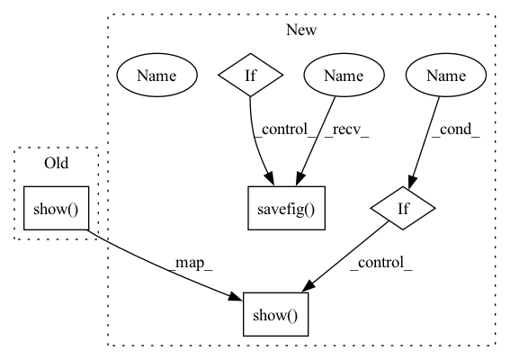

Pattern ID :10489
Before Change
Plots data points
plt.scatter(samples[labels == -1, 0], samples[labels == -1, 1], s=0.1, c="blue")
plt.scatter(samples[labels == 1, 0], samples[labels == 1, 1], s=0.1, c="red")
plt.show()
After Change
plt.scatter(samples[labels == -1, 0], samples[labels == -1, 1], s=0.1, c="blue")
plt.scatter(samples[labels == 1, 0], samples[labels == 1, 1], s=0.1, c="red")
// End of plotting decision boundary
if save:
plt.savefig( save_name)
if show :
plt.show()
In pattern: SUPERPATTERN
Frequency: 3
Non-data size: 5
Instances Fragment ID: 36480388
Project Name: dmizr/phuber
Commit Name: 10bc147b84061222107bf0241b388cd1f691bea4
Time: 2020-12-15
Author: david.mizrahi@epfl.ch
File Name: synthetic/utils.py
M Class Name: AnonimousClass
N Class Name: AnonimousClass
M Method Name: plot_data(5)
N Method Name: plot_data(2)
M Parent Class:
N Parent Class:
M File Name: synthetic/utils.py
N File Name: synthetic/utils.py
M Start Line: 57
M End Line: 61
N Start Line: 69
N End Line: 83
Before Change
)
// End of plotting decision boundary
plt.show()
def plot_data(samples: np.ndarray, labels: np.ndarray) -> None:
Plots data pointsAfter Change
)
// End of plotting decision boundary
if save:
plt.savefig( save_name)
if show :
plt.show()
def plot_data(
samples: np.ndarray, Fragment ID: 36480390
Project Name: dmizr/phuber
Commit Name: 10bc147b84061222107bf0241b388cd1f691bea4
Time: 2020-12-15
Author: david.mizrahi@epfl.ch
File Name: synthetic/utils.py
M Class Name: AnonimousClass
N Class Name: AnonimousClass
M Method Name: plot_boundaries(6)
N Method Name: plot_boundaries(3)
M Parent Class:
N Parent Class:
M File Name: synthetic/utils.py
N File Name: synthetic/utils.py
M Start Line: 21
M End Line: 54
N Start Line: 22
N End Line: 67
Before Change
est_plot, = ax.plot(est[:, 0], est[:, 1], ".-", label="Estimated State")
ax.legend(handler_map={est_plot: HandlerLine2D(numpoints=1)})
plt.title("%s Example" % model_name.upper())
plt.show()
After Change
ax.legend(handler_map={est_plot: HandlerLine2D(numpoints=1)})
plt.title("%s Example" % model_name.upper())
if save is not None:
figure = os.path.join(save, model_name + "_bicycle.png")
plt.savefig( figure)
print("Saved to", figure)
if show :
plt.show()
Fragment ID: 36480391
Project Name: pypose/pypose
Commit Name: 2fc2ef32b463a04e89297bae17d664c50879c650
Time: 2023-04-03
Author: chenwang@dr.com
File Name: examples/module/filter/bicycle.py
M Class Name: AnonimousClass
N Class Name: AnonimousClass
M Method Name: bicycle_plot(6)
N Method Name: bicycle_plot(4)
M Parent Class:
N Parent Class:
M File Name: examples/module/filter/bicycle.py
N File Name: examples/module/filter/bicycle.py
M Start Line: 66
M End Line: 66
N Start Line: 40
N End Line: 73